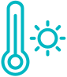

Process
Discovery Phase
I conducted secondary research to understand the context of climate change and different aspects about it.
I conducted secondary research to understand the context of climate change and different aspects about it.
 -Synthezing data points and futher connecting the dots through affinity
mapping-
-Synthezing data points and futher connecting the dots through affinity
mapping-
Key questions I asked
I understood that the core problem to be addressed the lack of
sustainable co-existance between humans and nature. Nature including
plants, animals and micro organisms
Key Discovery
I learnt that plankton are one of the most important organisms for oxygen production by contributing to 50% of the world's oxygen production & compose only ~1% of the global biomass.
I learnt that plankton are one of the most important organisms for oxygen production by contributing to 50% of the world's oxygen production & compose only ~1% of the global biomass.
75,000,000 colonies of Phytoplankton (2.5 metre approx) is equal
to one tree
Phytoplankton have a
faster turn over rate than compared to trees
Acidification of oceans affecting Phytoplanktons on a global
scale

Increase in temperature resulting in reduction of available
nutrients
Empathizing with the target users
After researching I decided my user group to be young adults (18 to 25 years). Consequently I went on to understand more about my users to finally build a persona.
After researching I decided my user group to be young adults (18 to 25 years). Consequently I went on to understand more about my users to finally build a persona.
 -User Persona-
-User Persona-